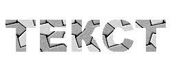
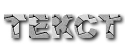
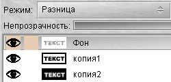
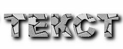

Эффект падающей тени
(drop shadow) придает любому изображению, пусть даже
абсолютно двухмерному, некий оттенок объемности и
присутствия разных плоскостей в изображении. Даже
небольшая падающая тень, добавленная к обычному тексту,
делает его более выразительным и приятным для
восприятия. Сравните сами:


Текст без тени как бы принадлежит
плоскости страницы. Хоть он и имеет четкие границы, но
создается впечатление, что он представляет единое целое
с фоном. Зато после добавления небольшой падающей тени,
он приобрел более резкие очертания и "приподнялся" над
плоскостью фона. Давайте рассмотрим, как создать эффект
тени используя возможности GIMP.
Создать эффект падающей тени в GIMP
можно как минимум тремя способами. Рассмотрим самый
простой случай. Пусть у нас есть небольшое изображение
250х100 точек на котором мы хотим получить надпись с
тенью. Откроем диалог слоев (ctrl+L) и создадим новый
прозрачный слой, оставив фон нашего изображения
нетронутым. Теперь выберем инструмент "Текст" и напишем
нужную надпись на прозрачном слое. Далее возможно два
варианта действия:
Применив этот скрипт, Вы
получите для текста красивую падающую тень, которая
будет помещена в диалоге слоев в виде отдельного слоя
"Drop-Shadow":
Теперь рассмотрим другой способ
создания падающей тени, который заодно поможет понять,
как работает скрипт "Падающая тень". Вернемся к случаю,
когда у нас имеется изображение с двумя слоями: фоном и
прозрачным слоем с текстом. Создайте копию прозрачного
слоя с текстом и назовите его "тень". Теперь, выбрав его
в диалоге слоев включите для него параметр "
Сохранить
прозрачность". Затем либо используя кисть, либо
используя заливку, закрашиваем весь слой нужным цветом.
"Сохранение прозрачности" позволит при этом не
затрагивать прозрачные точки (см. Работа
со слоями).
Теперь для слоя
"тень" примените
Фильтры - Размывание - Гауссово
размывание, отключив перед этим параметр
"
Сохранять прозрачность". Таким образом мы
получили размытый контур нашего текста:
Сдвинем тень относительно
исходного изображения, используя
Изображение -
Преобразование - Смещение, на нужное количество
точек по X и Y, а затем установите в диалоге слоев
нужный уровень непрозрачности. Если Вы использовали теже
значения, что при использовании скрипта, то и результат
должен получиться таким же.
Вполне законно Вы
можете спросить, а зачем нам все делать руками, если
есть готовый скрипт? Ну во-первых Вы теперь знаете как
этот скрипт работает, а во-вторых никто не запрещает
использовать для тени закраску не просто цветом, а
градиентом или шаблоном. Посмотрите что из этого может
получиться:
В первом случае, я использовал
билинейный градиент для заливки слоя "тень" (после его
размытия), а во втором заливку шаблоном. При этом должен
быть включен параметр "
Сохранять прозрачность".
В обоих предыдущих случаях тень
получалась из слоя, где на прозрачном фоне находилось
отбрасывающее тень изображение. Однако оба этих способа
будут бесполезны, если изображение находится не на
прозрачном слое, а слито с фоном. Однако и здесь можно
найти выход из положения. Предположим, что у нас есть
написанный текст на белом фоне. Создадим копию этого
слоя (копия1) и используя
Изображение - Цвета -
Кривые, постараемся добиться, чтобы осталось только
два цвета: черный и белый. При этом, если изображение
было цветным, то сначала его нужно обесцветить
(
Изображение - Цвета - Обесцветить).
Теперь создайте копию
этого слоя (копия2) и инвертируйте его (
Изображение -
Цвета - Инвертировать), Таким образом у нас
получилось три слоя: фон - начальное изображение, копия1
и копия2. Разместите их именно в таким порядке: Фон,
копия1, копия2.
Будем работать в слое
"копия2". Применим к нему
Фильтры - Размывание -
Гауссово размывание с нужным радиусом, а затем
сместим на нужное расстояние по X и Y. После этого
выберите диалоге слоев режим "Умножение" для слоя
"копия1".
Теперь для слоя "фон" в
котором находится начальное изображение выберите режим
"Разница":


В итоге мы опять
получили падающую тень, но уже не используя прозрачные
слои. Если присмотреться, то видно, что на буквах при
этом появились неровности, например на букве "С".
Частично избавиться от этого можно, применив
Фильтры
- Размывание - Гауссово размывание радиусом 1 для
слоя "копия1":
Итак, мы рассмотрели
три основных способа создания падающей тени в GIMP. Я не
исключаю, что есть еще возможность добиться этого
эффекта, но лично мне для работы хватает этих трех. По
возможности, я рекомендую, создавать тень используя
прозрачные слои, т.к. далеко не всегда удается добиться
нужного эффекта совершая операции с непрозрачными.
Успешных Вам экспериментов! Если у
Вас возникли какие-либо вопросы или замечания - пишите
мне на e-mail:
[email protected].